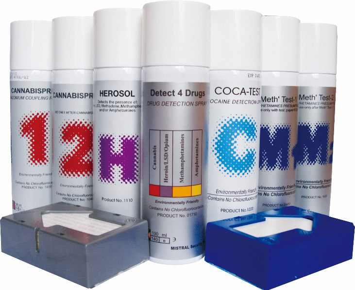
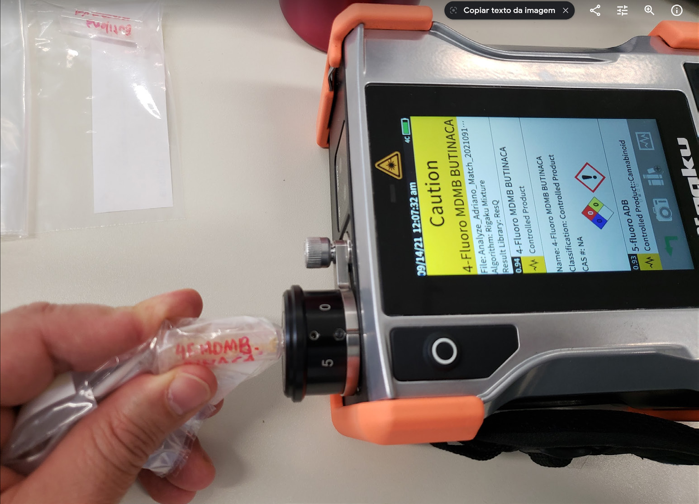
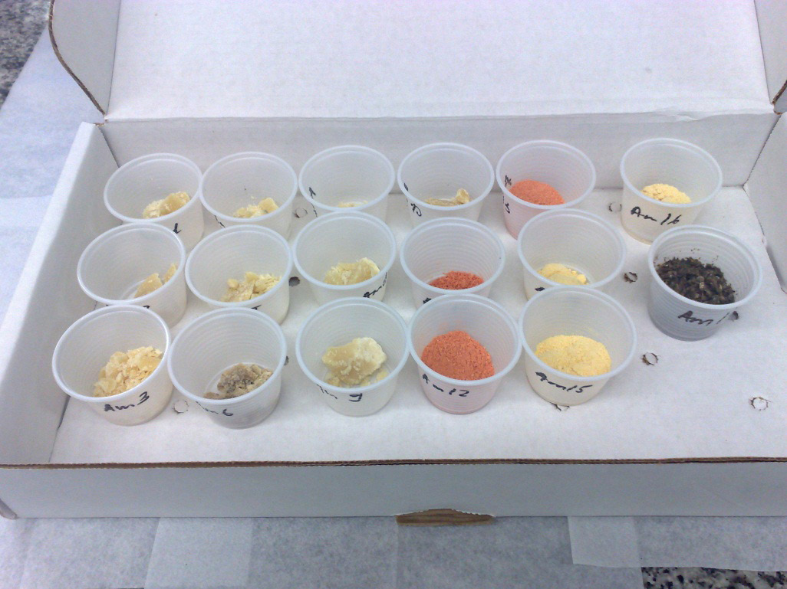

Nos termos da Lei n.º 11.343/2006, conhecida como a Lei de Drogas (ver Capítulo 1), é essencial para a lavratura do auto de prisão em flagrante a existência do laudo de constatação da natureza e quantidade da droga apreendida, devendo ser realizada por Perito Oficial e, somente na falta deste, por pessoa idônea. Essa pessoa pode ser um policial, após ser nomeado por autoridade policial. É altamente recomendado que esses testes sejam realizados por Peritos Criminais Federais e, dependendo da complexidade do caso, até por Peritos Criminais Federais da área de laboratório, devido a diversos aspectos relacionados com amostragem, formas de disfarce de drogas, bem como a possível mistura de substâncias diversas com as drogas proscritas, que podem agir como interferentes em testes preliminares. Nos casos em que a logística necessária para que o perito faça o teste (o deslocamento dele até o material suspeito ou vice-versa) ponha em risco o prazo legal de 24 horas, o que poderia, em tese, prejudicar a lavratura do auto de prisão e apreensão, os testes preliminares podem ser realizados por policial nomeado pela autoridade policial. A existência do laudo preliminar para a constatação da natureza e quantidade de droga, bem como quem pode emitir o laudo de constatação, está definido na Lei n.º 11.343/2006 e outros dispositivos legais correlatos (Código de Processo Penal – CPP). Entretanto, não há regulamentação a respeito de como esse laudo preliminar deve ser elaborado. A Perícia da Polícia Federal baseia-se em modelos e guias de organismos internacionalmente reconhecidos (UNODC - United Nations Office on Drugs and Crime – Escritório das Nações Unidas sobre Drogas e Crime, dentre outros), bem como a literatura científica especializada, para orientar os trabalhos realizados durante a realização dos exames para o laudo preliminar e laudo definitivo de drogas. Os testes recomendados pela UNODC são baseados em evolução de cor. São testes simples, rápidos, práticos e originam bons indícios sobre a natureza do material apreendido. Os principais testes preliminares são mostrados na tabela a seguir:
Tabela 1 - Tabela de testes preliminares para identificação de drogas,
com resultados indicativos, possíveis interferentes e registros de falsos positivos.
| DROGA OU GRUPO DE DROGAS | TESTE PRELIMINAR | RESULTADO | INTERFERENTE (S) | FALSOS POSITIVOS |
|---|---|---|---|---|
| Cocaína | Scott modifi cado | Cor azul indica a presença de cocaína. | Compostos metálicos, ex.: sais de ferro. | Heroína, meta dona, lidocaína, dentre outros. |
| Maconha e derivados | Fast Blue | Coloração avermelhada indica canabi noides. | Idade da amostra. | Patchouli e alguns óleos essenciais (kit comercial DL) |
| Duquenois Levine (DL) | Violeta na camada infe rior (clorofór mica) indica presença de canabinoides | Idade da amostra. | Patchouli e alguns óleos essenciais (kit comercial DL) | |
| MDMA / MDA | Simon | Coloração azul escuro intenso indica MDMA. | Não identifica dos. | Certos medica mentos podem reagir similar mente |
| Marquis | Cor negra ou púrpura indica MDMA ou MDA. | Não identifica dos. | Não identifica dos. | |
| Anfetaminas / metanfetaminas | Marquis | Cor laranja que tende para mar rom indica presença de anfetaminas ou metanfeta minas. | Não identifica dos. | Não identifica dos. |
| Simon | Metanfetamina não produz cor, anfetami nas diversas produzem tons de azul. | Não identifica dos. | Não identifica dos. |
| DROGA OU GRUPO DE DROGAS | TESTE PRELIMINAR | RESULTADO | INTERFERENTE (S) | FALSOS POSITIVOS |
|---|---|---|---|---|
| Ópio / morfina / codeína / heroína | Marquis | Cor violeta à púrpura -avermelhada indica a presença de opioides. | Não identifica dos. | Não identifica dos. |
| LSD | Ehrlich | Cor violeta que aparece após alguns minutos indica presença de LSD. | Não identifica dos. | Dihidro-LSD. |
| Benzodiazepínicos | Zimmerman | Cor púrpura -avermelhada ou rosa indica a presença de benzodiazepí nicos. | Não identifica dos. | Não identifica dos. |
| Barbitúricos | Dille- Koppanyi | Cor púrpura avermelhada indica a presença de barbitúricos. | Não identifica dos. | Não identifica dos. |
| Cloreto de etila (lança-perfume) | Teste de chama | Ao queimar produz uma chama verde. | Não identifica dos. | Alguns alquil organo clorados podem se com portar da mesma forma. |
| Teste para cloretos | O resíduo da chama produz sólido branco floculento, indicativo para cloretos. | Não identifica dos. | Alguns alquil organo clorados podem se com portar da mesma forma. | |
| Teste de ponto de ebulição | Temperatura de ebulição de 12 °C. | Não identifica dos | Não identifica dos. |
No Apêndice 1, são delineados os procedimentos para testes preliminares envolvendo diversas drogas de abuso. As formas de preparo dos reagentes utilizados nos testes de coloração são mostradas no Apêndice 2. Em unidades de criminalística descentralizadas e em diversos procedimentos policiais podem ser utilizados também kits comerciais para identificação de drogas. Um exemplo é o kit (Fig. 22) capaz de detectar preliminarmente cocaína (C), heroína (H), maconha (cannabis, 1 e 2), ecstasy (e metanfetamina, M) e drogas de espectro geral (D4D). Esse tipo de abordagem tem suas vantagens, como a maior portabilidade, e possibilidade de difundir uma ferramenta de investigação policial mais simples e de uso abrangente após um processo de aquisição centralizada.

Fig. 22 - Kit de identificação de drogas “Mistral Security”, do site: http://www.mistralsecurityinc.com/Our-Products/Drug -Detection-and-Identification-Field-Test-Kits/Aerosols. Acesso em: fev. 2019. Desde o crescimento no número de casos de novas substâncias psicoativas, os peritos da área de Química Forense têm enfrentado sérios problemas na reali zação de testes preliminares adequados para a avaliação de NSPs. Avaliando-se a aplicabilidade de testes de coloração nessas drogas, uma das conclusões a que se chega é que o número de reagentes necessários para cobrir um número significativo dessas drogas é imenso. Uma alternativa para realizar testes preli minares de maneira mais confiável é o uso de equipamentos de instrumentação analítica portáteis, tais como espectrômetro Raman ou espectrofotômetro de FTIR, por exemplo (ver também item 4.3 – Exames Definitivos Instrumentais). A Fig. 23 mostra um modelo de Raman portátil usado para exames preliminares em drogas.

Fig. 23 - Equipamento de Raman portátil modelo ResQ™ da empresa Rigaku, disponível para as Unidades de Criminalística da Polícia Federal. Quando não for possível a realização dos exames preliminares de constata ção, o material deve ser encaminhado diretamente para a realização do exame definitivo. Os exames preliminares de constatação devem ser acompanhados de um teste em branco, isto é, uma amostra que não contenha a droga que está sendo investigada. É importante utilizar utensílios limpos e secos na realização dos exames preliminares de constatação em materiais questionados distintos ou apreendidos de indivíduos diferentes, de forma a evitar contaminação cruzada. Cabe destacar que os testes preliminares anteriormente listados são apenas de caráter indicativo, devendo ser consideradas todas as variáveis que provocaram a realização do teste (aspectos operacionais, suspeitas, busca e apreensão, etc.). As drogas ilícitas, durante o processo do tráfico, podem estar camufladas em diversos tipos de objetos (malas, frascos, compartimentos secretos, etc.). Contudo, todas as precauções possíveis devem ser tomadas nas situações em que as drogas são misturadas com bebidas, comidas e substâncias diversas que podem, muitas vezes, gerar resultados falso-positivos. Nos casos de amostras complexas, a presença de um Perito Criminal Federal com formação de laboratorial, quando possível, pode evitar eventuais equívocos de avaliação. A título de exemplo, as amostras apresentadas a seguir são de cocaína de alto grau de pureza. Em alguns casos, traficantes adicionaram sais de ferro (materiais de coloração avermelhada) para dificultar a realização de exames preliminares baseados em reações de coloração.

Fig. 24 - Amostras de cocaína de alta pureza, incluindo porções adulteradas com sais de ferro para dificultar testes preliminares de identificação.
A Instrução Técnica n.º 006/2006/GAB/DITEC, de 27 de julho de 2006, publicada no suplemento ao Boletim de Serviço n.º 151, de 07 de agosto de 2006, dispõe sobre a padronização de procedimentos e métodos para fins de exames químico-analíticos no âmbito da perícia criminal de laboratório. Também apresenta orientações sobre critérios de amostragem, testes preliminares recomendados em drogas de abuso, nos adulterantes mais comuns e em reagentes químicos que podem ser encontrados em laboratórios de refino/produção de drogas. O Perito Criminal Federal, quando designado para realizar um exame preli minar, deve, em primeiro lugar, estar ciente de que, independentemente do tipo de droga a ser constatada, são necessários os cuidados durante o manuseio de qualquer substância, para garantir sua própria segurança e de sua equipe. Esses cuidados serão estudados em maior detalhe na disciplina Locais de Crime. Registro fotográfico e descrição de possíveis logomarcas em drogas proscritas podem, por exemplo, relacionar apreensões realizadas em lugares e momentos diferentes (projeto de Perfil Químico de Drogas – PeQui, coordenado pela CGPRE e DITEC/INC, ver Capítulo 2, item 2.1.1). A amostragem deve seguir critérios aceitos (por exemplo, os sugeridos na IT n.º 06/2006-DITEC). Quanto melhor a amostragem, mais representativa ela será do total apreendido. Realizado de maneira eficiente, o processo de amostragem poderá otimizar os recursos necessários para a elaboração do laudo definitivo pelos Peritos Criminais Federais, gerando uma prova material mais robusta para o procedimento investigativo. Portanto, quem for designado para realizar a amostragem deve: A partir da inspeção visual de cada unidade do material apreendido a ser amostrado, separar em grupos os produtos que possuam as seguintes caracte rísticas em comum:
Dentro de cada grupo, determinar o número de unidades a serem aleatoria mente amostradas de acordo com a tabela a seguir.
Tabela 2 – Número de unidades a serem amostradas, segundo a IT n.º
06/2006-DITEC.
| Número total de unidades de um grupo (n) | Número de unidades a serem amostradas |
|---|---|
| Se n < 10 | Amostrar todas as unidades do grupo. |
| Se 10 ≤ n ≤ 100 | Amostrar 10 unidades do grupo escolhidas aleatoriamente. |
| Se n > 100 | Amostrar √n unidades do grupo escolhidas aleatoriamente. O resultado de √n deve ser arredondado para o número inteiro superior mais próximo. |
As quantidades mínimas de amostra a serem retiradas de cada unidade devem ser aquelas expostas na tabela a seguir.
Tabela 3 - Quantidades mínimas de amostras a serem coletadas por
unidade, conforme o tipo de produto.
| Tipo de produto | Amostra mínima por unidade* |
|---|---|
| Sólidos em geral | 2,0 g (três colheres de sopa). |
| Líquidos em geral | 200 ml (um copo). |
| Líquido volátil (ex.: lança-perfume) | Embalagem original. |
| *Caso a unidade a ser amostrada possua quantidade menor que a mínima constante nesta tabela, a unidade deverá ser enviada na sua totalidade. |
O resultado dos exames preliminares deve ser relatado no laudo prelimi nar de constatação. Esse documento está previsto na Lei n.º 11.343/2006, em seu art. 50: Art. 50. Ocorrendo prisão em flagrante, a autoridade de polícia judiciária fará, imediatamente, comunicação ao juiz competente, remetendo-lhe cópia do auto lavrado, do qual será dada vista ao órgão do Ministério Público, em 24 (vinte e quatro) horas. § 1º Para efeito da lavratura do auto de prisão em flagrante e estabelecimento da materialidade do delito, é suficiente o laudo de constatação da natureza e quantidade da droga, firmado por perito oficial ou, na falta deste, por pessoa idônea. § 2º O perito que subscrever o laudo a que se refere o § 1º deste artigo não ficará impedido de participar da elaboração do laudo definitivo. O laudo preliminar de constatação deve ser um documento claro, conciso. Ele deve relatar as características observadas no exame visual do material apreendido e o peso aferido, especificando se este é o peso líquido (peso das substâncias descontadas as embalagens/invólucros, preferencialmente) ou peso bruto (com embalagem/invólucro), quando as circunstâncias não permitirem a aferição do peso líquido no momento do flagrante. O preâmbulo do laudo preliminar de constatação, no âmbito da Polícia Federal, está regulamentado pela Portaria n.º 002/2007-GAB/INC, de 16 de janeiro de 2007. A padronização de formato e diagramação foi regulamentada pela Portaria n.º 2.048/2011-DG/DPF, de 10 de janeiro de 2011. Os resultados dos exames preliminares devem ser relatados no texto, bem como descritas no laudo as quantidades separadas para os exames definitivos. É aconselhável citar o enquadramento legal (ver Capítulo 1) das substâncias investigadas nos testes, principalmente quando se tratar de drogas ou produtos químicos sujeitos a controle.
Havendo resultado positivo nos exames preliminares, conforme tratado no item 4.1, é necessária a realização de exames que estabelecerão de forma mais precisa a composição do material apreendido. Em outras palavras, é necessária a realização dos chamados exames definitivos, cujo resultado é relatado no laudo de perícia criminal federal. Nada impede, entretanto, que materiais testados em exames preliminares que tenham gerado resultado negativo sejam encaminhados para exames definitivos, devido a diversos fatores, como suspeita de adição de interferentes, complexidade da matriz, inexistência de testes para substâncias específicas ou para dirimir dúvidas no âmbito do processo investigativo. Uma das formas que podem ser usadas para a elaboração dos laudos em caráter definitivo é seguir as recomendações presentes na Instrução Técnica n.º 06/2006-SEPLAB/INC/DITEC, de 27 de julho de 2006, que se baseou nos métodos de análise preconizados pelo SWGDRUG (Scientific Working Group for the Analysis of Seized Drugs), um grupo científico de trabalho dedicado ao estudo das drogas de abuso. As recomendações presentes na IT n.º 06/2006 dividem os exames de acordo com seu poder de discriminação em três categorias, conforme pode ser visto na seguinte tabela:
Tabela 4 - Classificação dos métodos analíticos para identificação de
drogas segundo o poder de discriminação, conforme recomendações do SWGDRUG e da IT n.º 06/2006.
| Categoria A | Categoria B | Categoria C |
|---|---|---|
| Infravermelho (IV) | Eletroforese capilar (EC) | Testes de cor e precipitação |
| Espectrometria de massas (EM) | Cromatografia gasosa (CG) | Espectroscopia de fluores cência |
| Ressonância magnética nuclear (RMN) | Espectrometria de mobilidade de íons | Imunoensaios |
| Espectroscopia Raman | Cromatografia líquida de alta eficiência (CLAE) | Propriedades físicas e físico-químicas |
| Difratometria de raios X | Microcristalização | Espectroscopia ultravioleta -visível (UV/visível) |
| Marcadores farmacológicos | ||
| Cromatografia de camada delgada (CCD) | ||
| Apenas cannabis: exame botânico morfológico |
A IT n.º 06/2006 propõe as seguintes recomendações para identificação de drogas de abuso:
No caso de técnicas hifenadas, como CG/EM ou CLAE/DAD-UV, estas deverão ser consideradas técnicas separadas (desde que validadas). Cada método analítico tem suas vantagens e desvantagens. Em um laboratório de química forense (LQF) da Polícia Federal que dispõe de um cromatógrafo gasoso acoplado a um espectrômetro de massas (CG/EM) é possível realizar a identificação de diversas drogas de abuso, dentre aquelas listadas na Portaria n.º 344-SVS/MS. Entretanto, apesar de ser uma técnica poderosa em termos analí ticos, nem todas as substâncias proibidas/controladas podem ser analisadas em condições normais de um cromatógrafo gasoso, algumas destas podem degradar no processo de análise. Outro equipamento muito encontrado nos LQF é o espectrofotômetro na região do infravermelho com transformada rápida de Fourier (FTIR). É uma técnica robusta, normalmente mais barata que o CG/EM, cujas análises são realizadas à temperatura ambiente (não sofre com problemas de degradação térmica). A análise de FTIR, contudo, pode ser dificultada em materiais questionados que consistam em misturas de compostos com grupos funcionais observados na mesma região de interesse. Alguns laboratórios de química forense na Polícia dispõem de equipamentos com maior poder de discriminação em análises, tais como espectrômetros de massa de alta resolução (HRMS) e espectrometria de massas em tandem (MS/ MS), que podem ser extremamente úteis na identificação de novas substâncias psicoativas (NSPs). Para boa parte das drogas mais comuns, tais como cocaína e maconha, a cromatografia de camada delgada é uma técnica que gera resultados confiáveis. Essa confiabilidade é alcançada quando o laboratório adota procedimentos para garantia e controle de qualidade como no uso de duas amostras para análises, controles de padrões e brancos, durante a realização das análises que irão subsidiar os laudos definitivos. Nesta fase, deverá ser mantido material como contraprova para eventual nova perícia, a não ser quando a quantidade ou a conservação do material analisado não permitirem. Também é recomendado que todos os registros de laboratório (fotografias, cromatograma, fichas de análises) sejam devidamente arquivados, de forma que os resultados obtidos sejam passíveis de revisão. Os resultados dos testes definitivos, conforme mencionado anteriormente, podem ou não corroborar com os resultados dos testes preliminares. Mesmo que os testes preliminares e definitivos sejam conduzidos por critérios técnicos confiáveis, situações de divergência podem ocorrer devido aos diferentes poderes de discriminação dos exames. Em caso de dúvida, um novo exame pode ser requerido pelo Ministério Público ou Poder Judiciário.